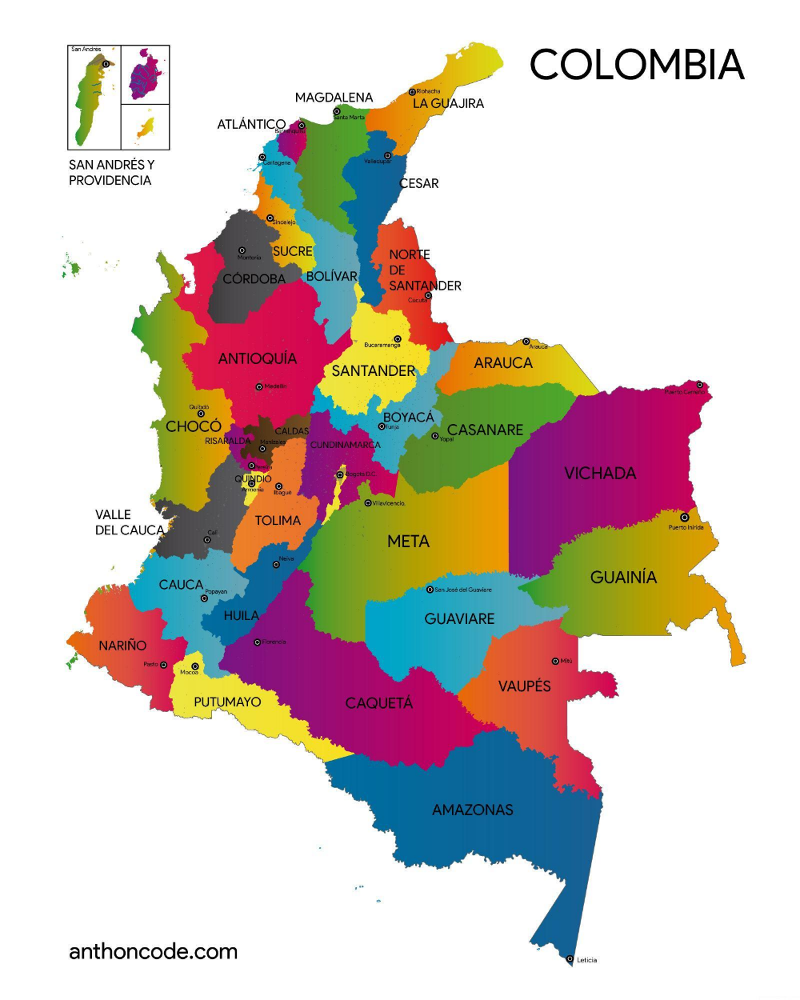

Departamentos y sus Capitales de Colombia
Departamentos
Valle del cauca
Amazonas
Antioquia
Arauca
Atlantico
Bolivar
Boyaca
Caldas
Caquetá
Casanare
Cauca
Cesar
Choco
Cordoba
Cundinamarca
Guainia
Guaviare
Huila
Guajira
Magdalena
Meta
Nariño
Norte de santander
Putumayo
Quindio
Risaralda
San andres y providencia
Santander
Sucre
Tolima
Vaupes
Vichada
